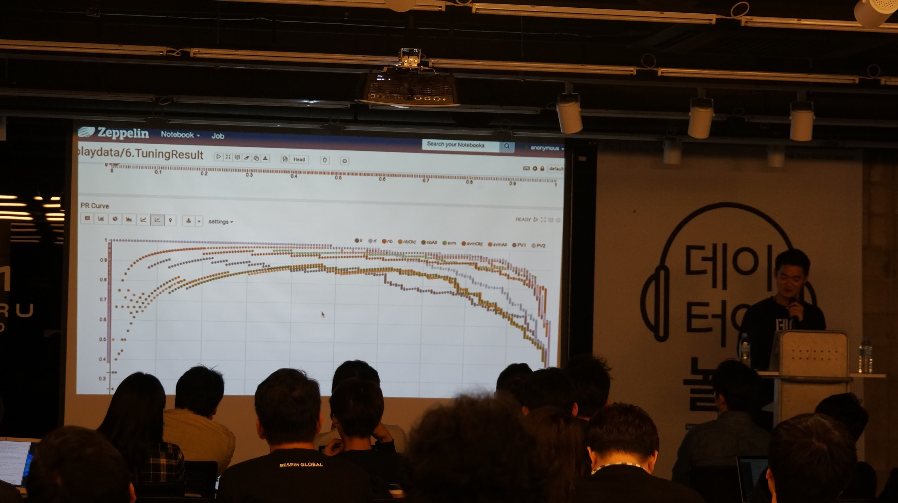

데이터야놀자
메뉴
프로그램
지난행사
발표지원
의견제출
공개채팅
페이스북
사진기록
상호후원
추천도서
데놀구성
지난 행사
작년
2016년 10월 14일 역삼 MARU 180
에서 성황리에 마무리된
데이터야놀자
의 기록입니다.
지난 프로그램
키노트
데이터 분석에서 가치 만들어내기 - 김상우
오픈소스 시작부터 끝까지 - 조현종
KakaoBank with opensource - 성동찬
Hadoop 10 주년과 Hadoop3.0의 등장 - 서동진
제플린과 오픈소스 생태계, 그리고 실리콘밸리 - 이문수
발표 - 벙커
Spark와 Zeppelin을 활용한 머신러닝 실전 적용기 - 김태준
데이터로 가치를 만드는 것이 어려운 이유 - 이주형
Spark SQL 실시간 스트리밍 (Structured Streaming) - 권혁진
글로벌 사례로보는 데이터로 돈 버는 법 - 고영혁
데이터 과학을 위한 저작도구 - 이광춘
발표 - 살롱
Data Analytics with Druid - 정유선
아이돌그룹 연예기사 개수와 음원차트 상관관계 - 하정철
줄리아0.5와 DataFrames.jl TensorFlow.jl - 노우경
(딥러닝없음주의) 알파고의 시간 - 황준식
Custom DevOps Monitoring System in MelOn - 유승민
지난 보도 자료
빅데이터 분야 오픈소스 개발자 축제, ‘데이터야놀자’ 개최
빅데이터 개발자 컨퍼런스 `데이터야 놀자` 개최
[현장] 데이터과학자들이 자주 겪는 고민 3가지는?
국내 스타트업, 어떻게 글로벌 인기 오픈소스를 만들었을까
지난 사진들
지난 데이터야놀자의 뜨거운 열기를 사진으로나마 느껴보세요.
